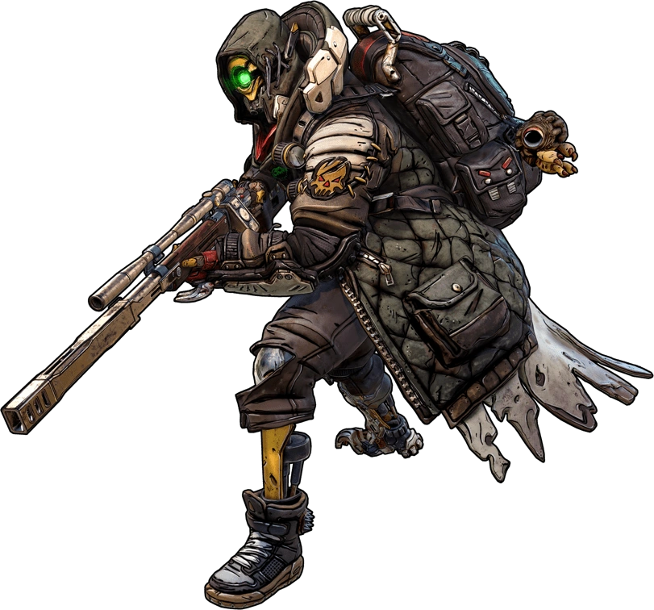
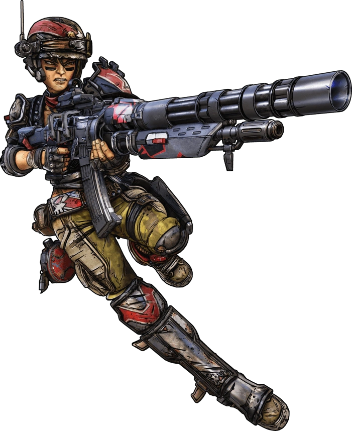
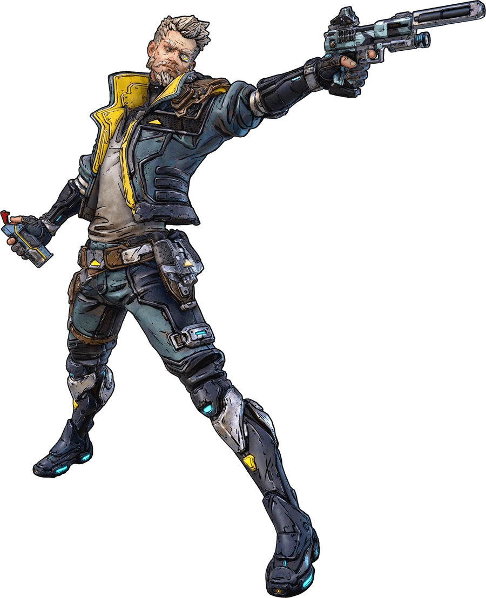
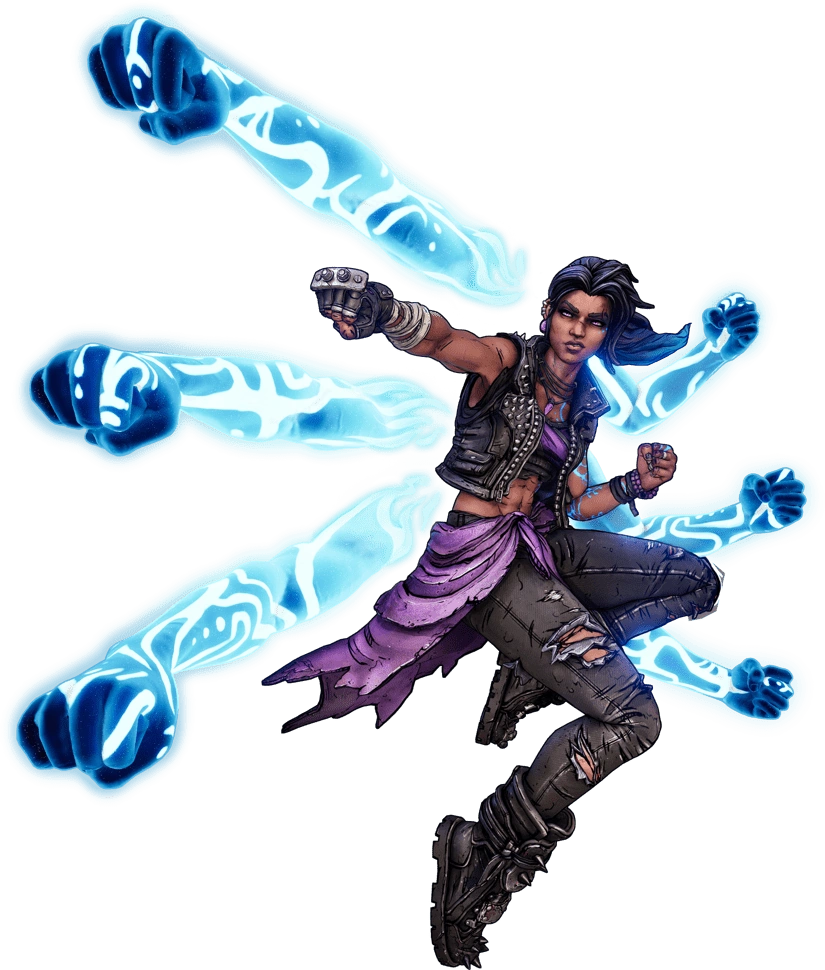

LES CHASSEURS DE L'ARCHE DE BORDERLANDS

FL4K
C'est une intelligence artificielle nomade et robotique qui possède une connexion unique avec la faune sauvage. Dans le jeu, il incarne la classe du Dresseur, combattant toujours accompagné de l'une de ses créatures de compagnie loyales.
Conçu à l'origine comme un simple robot indexeur pour un Grand Archiviste, FL4K a développé une conscience propre et une soif insatiable pour la chasse. Il a quitté ses fonctions pour suivre la piste de "la Mort", qu'il considère comme sa muse.
FL4K est un maître du combat à distance, spécialisé dans les coups critiques massifs et le ciblage des points faibles. Ses familiers restent constamment sur le terrain pour infliger des dégâts, lui octroyer des bonus passifs et attirer l'attention des ennemis (ou même le réanimer s'il tombe au combat).

MOZE
Ancienne soldate d'élite, elle incarne la classe du Mécha. Sa particularité réside dans sa compétence d'action unique : elle peut invoquer et piloter un robot géant de 15 tonnes lourdement armé appelé Ours de Fer (Iron Bear).
Moze a servi pendant des années dans la division blindée mécanisée de la méchante corporation Vladof. Après que toute son escouade a été décimée lors d'une mission suicide, elle a déserté avec son robot pour devenir mercenaire et Chasseuse de l'Arche.
Moze excelle dans la puissance de feu continue et les explosions de zone. Elle dispose de mécaniques uniques pour régénérer ses munitions et ses grenades à la volée, ce qui lui permet de tirer presque à l'infini sans jamais recharger.

ZANE
C'est un tueur à gages corporatiste semi-retraité qui utilise des technologies militaires de pointe pour tromper ses ennemis. Sa particularité unique est qu'il est le seul personnage capable d'équiper deux compétences d'action en même temps (en renonçant à l'utilisation des grenades manuelles).
Issu de la tristement célèbre famille Flynt (frère des boss Baron Flynt et Capitaine Flynt des opus précédents), Zane a passé des décennies à travailler comme mercenaire et agent secret pour toutes les grandes corporations de la galaxie avant de "prendre sa retraite" sur Pandore.
Zane est le roi de la vitesse et de la mobilité. Plus il court vite, plus il inflige de dégâts. Son style repose sur le contournement, le clonage et le déclenchement constant de bonus dès qu'il active ou termine une compétence.

AMARA
Elle incarne la classe mythique de la Sirène et s'impose comme une héroïne axée sur le combat rapproché, le contrôle des foules et les dégâts élémentaires destructeurs.
Née dans les bidonvilles de la planète Partali, elle a grandi en utilisant ses pouvoirs pour défendre les opprimés et chasser le crime, devenant une championne et une célébrité locale.
Contrairement aux anciennes Sirènes plus évasives (Lilith et Maya), Amara adore la bagarre. Elle invoque des bras spectraux d'énergie pour écraser physiquement ses ennemis.